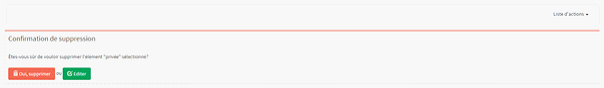

Pour pouvoir supprimer une Réponse vous devez au préalable vous être connecter au Back office.
Si cela n'est pas fait redirigez vous sur : Connexion au Back Office
Une fois connecté dirigez-vous dans la section Gestion des MCQ, puis cliquer sur le bouton  de la section Reponses. Puis sélectionner dans la liste la réponse à supprimer et cliquer sur son bouton .Vous serez alors rediriger sur l'écran ci-dessous.
de la section Reponses. Puis sélectionner dans la liste la réponse à supprimer et cliquer sur son bouton .Vous serez alors rediriger sur l'écran ci-dessous.

Vous disposez de plusieurs choix sur cette écran :
Pour confirmer la suppression cliquer sur le bouton Oui, supprimer.
Créé avec HelpNDoc Personal Edition: Générateur facile de livres électroniques et documentation